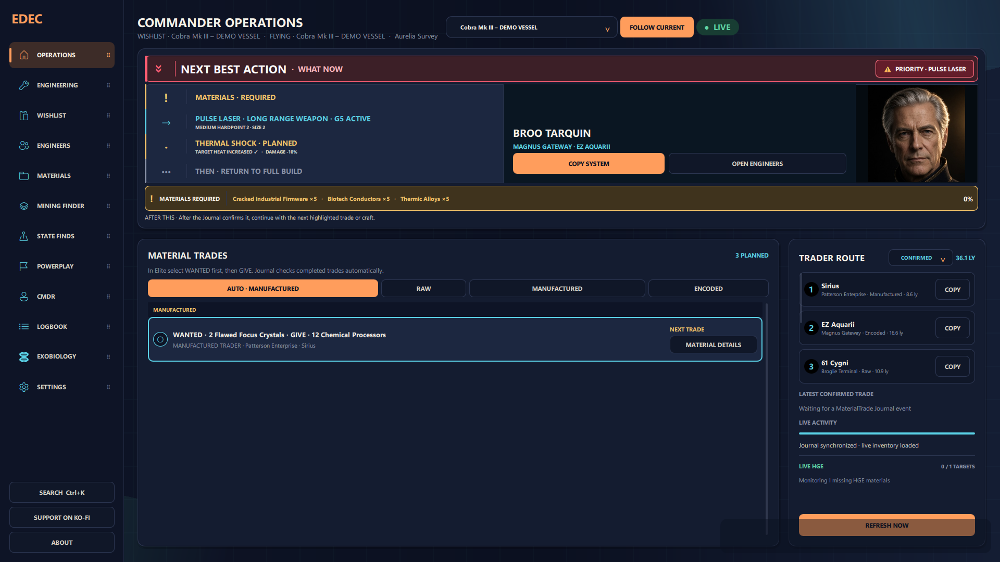
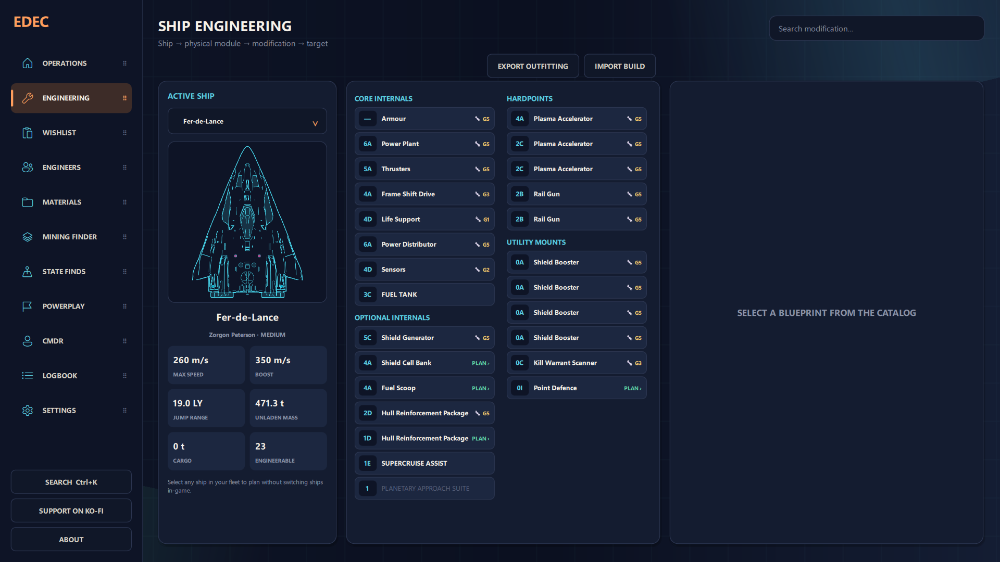
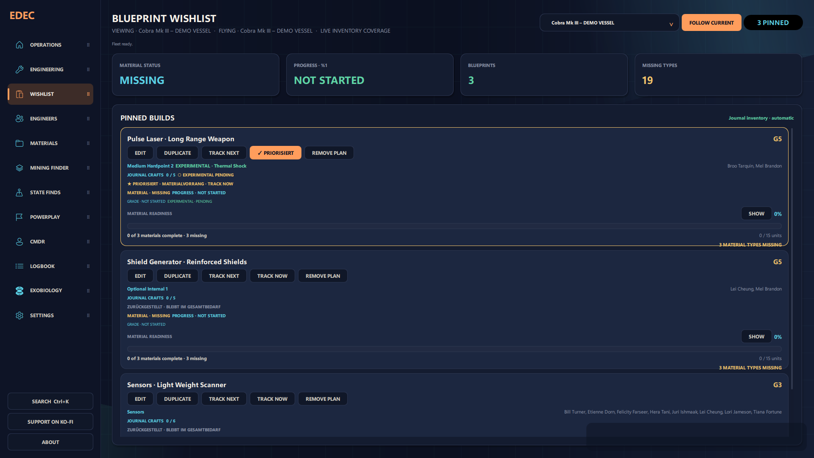
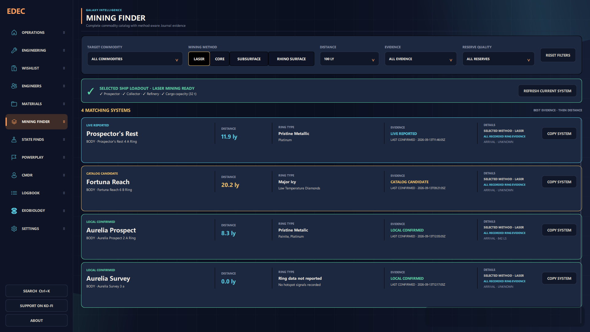
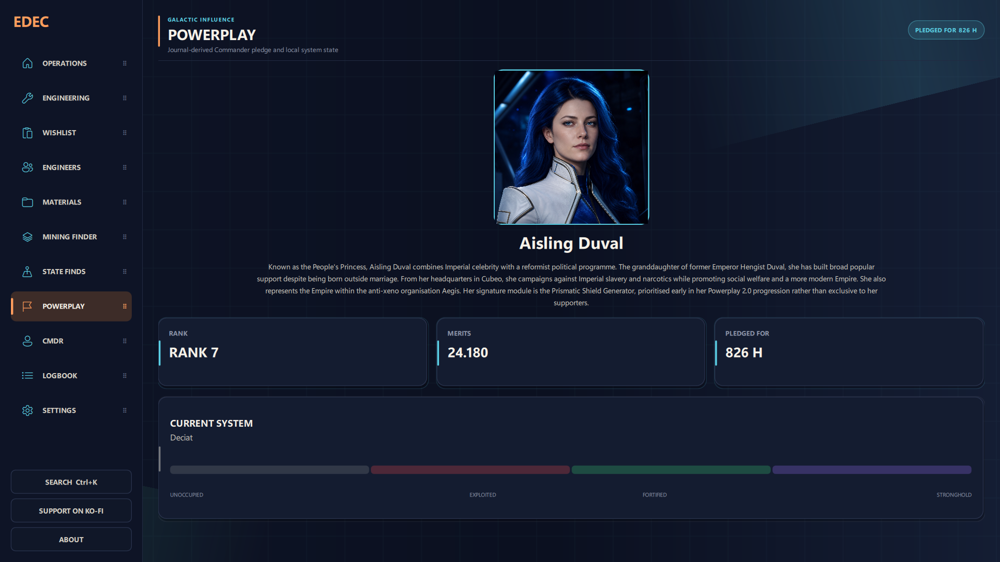
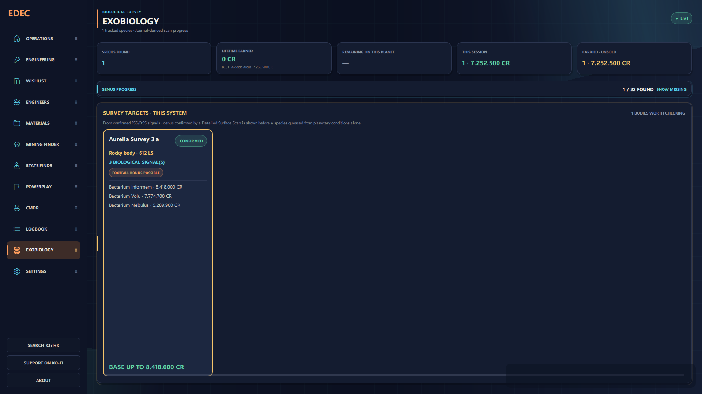

Live from your Commander's journal
Your ships. Your slots.
Your next action.
ED-Frame reads your local Elite Dangerous Journal and turns it into one cockpit for engineering, unlocks, materials, mining, state hunting, Powerplay, finances, fleet and exobiology — grounded in the exact physical module slots of your real ships, not a generic build.

Console modules
Every workspace a Commander actually runs.
Eight tools sharing one Journal-derived state — nothing re-entered, nothing guessed twice.
One next action
Every tracked build, missing material, route and unlock resolves to a single clear answer to “what now?”.
Your ships, your slots
Plan the exact Core Internal, Optional Internal, Hardpoint and Utility slot of every known hull — not a generic loadout.
Journal-confirmed progress
Installed modules, grades, experimental effects, credits, fleet moves, scans and unlocks update from evidence, not assumption.
Unlock & Tech Broker guides
Searchable capabilities, prerequisite chains and one-time Human and Guardian unlock tracking.
Mining, State Finds & HGE
Material routes, a live Mining Finder, State Finds and hazard-relief-zone assistance while you fly.
Biological survey workspace
Sample-distance guidance, genus completion tracking and a lifetime-earned ledger for exobiology runs.
Finances & fleet, at a glance
Live credit ticker, assets, average CR/h, ranks, reputation, fleet overview and a searchable flight record.
Offline-first by default
The core runs entirely from local files. Frontier CAPI, INARA, EDDN and Spansh stay explicit, controlled additions.
Why ED-Frame
Most build tools model a type of ship.
ED-Frame models your ship.
The specific hull with its ShipID, physical module slots and current Loadout — then connected to the rest of your Commander state: materials, Engineer access, routes, credits, fleet, signals and scans.
A plan stays attached to the slot, so two identical Multi-cannons never get confused. ED-Frame separates observed facts, planned work and predictions instead of presenting guesses as certainty. And you can plan for a ship parked across the bubble without switching to it in-game.
Viewport
A closer look at the console.





Before you fly
Frequently asked.
Is ED-Frame free?+
Yes. ED-Frame is free and open source under the GNU GPLv3 license, with no ads and no paid tier. You can also read every line of the code it runs.
Does ED-Frame upload my data anywhere?+
Not by default. The core app works entirely from your local Journal files. Frontier CAPI, INARA, EDDN and Spansh are separate, explicit switches you turn on yourself — nothing is sent anywhere unless you enable it.
Can I run ED-Frame alongside EDMC?+
Yes. Both read the same local Journal files independently and read-only, so there's no file conflict. If you enable EDDN uploads in both, each sends its own copy of the same events — harmless but redundant, so leave that switch on in only one of them.
Do I need to create an account?+
No account is required to use ED-Frame. Signing in to Frontier CAPI or INARA is only needed if you choose to enable those optional integrations.
What platforms and languages does ED-Frame support?+
ED-Frame runs on Windows 10 and 11, with the interface available in English, German, Spanish and French.
Fly prepared
Turn your Journal into a plan.
Free, open source, offline-first. No account, no telemetry you didn't switch on.